CODING AGENTS AS PIXEL WORLD MODELS
traex/GPT-6.1-Sol · 0170
点击播放 · 原生 RGB 像素
逐轮保存的候选
回放视频、检查图与代码变化。
每份候选均可单独播放。实际图片检查记录在下方工具轨迹中。
候选 01播放与检查图
点击播放 · 原生 RGB 像素

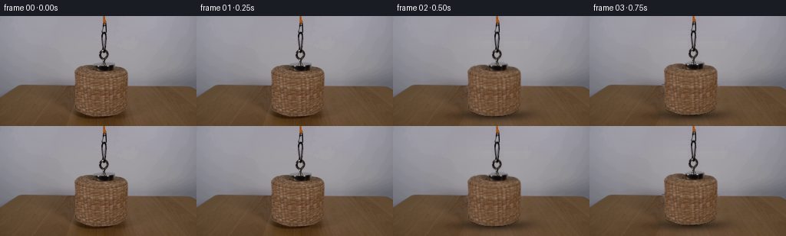
展开代码变化
--- 上一保存版本
+++ 本次保存版本
@@ -0,0 +1,159 @@
+from pathlib import Path
+import numpy as np
+from PIL import Image, ImageDraw, ImageFilter
+import cv2
+from scipy.ndimage import gaussian_filter, map_coordinates
+from scipy.sparse import lil_matrix
+from scipy.sparse.linalg import spsolve
+import artifact_io
+
+ROOT=Path(__file__).resolve().parent
+W,H=256,144
+src=np.asarray(Image.open(ROOT/'first_frame.png').convert('RGB')).astype(float)
+Y,X=np.mgrid[0:H,0:W].astype(float)
+
+def polygon(points,scale=4):
+ m=Image.new('L',(W*scale,H*scale))
+ ImageDraw.Draw(m).polygon([(round((x+.5)*scale),round((y+.5)*scale)) for x,y in points], fill=255)
+ return np.asarray(m.resize((W,H),Image.Resampling.LANCZOS)).astype(float)/255
+
+# Clean static wall: reconstruct only the portion concealed by the apparatus.
+wall=src.copy()
+for y in range(92):
+ xx=np.r_[np.arange(77,96),np.arange(171,199)]
+ for ch in range(3):
+ coeff=np.polyfit(xx,src[y,xx,ch],2)
+ wall[y,96:171,ch]=np.polyval(coeff,np.arange(96,171))
+# Cord/hook is a much narrower occluder, so preserve surrounding wall.
+for y in range(64):
+ l=src[y,123:128].mean(axis=0);r=src[y,144:149].mean(axis=0)
+ for x in range(128,144): wall[y,x]=l+(r-l)*(x-126)/20
+# Reuse visible wood grain with a perspective-preserving shift to the camera center.
+xmap=X+.435*(Y+55)
+xmap=np.minimum(xmap,254)
+texture=np.stack([map_coordinates(src[:,:,c],[Y,xmap],order=1,mode='nearest') for c in range(3)],axis=-1)
+# Recover the covered table using the texture's gradients and the real surroundings.
+mask=np.zeros((H,W),bool)
+for y in range(91,H):
+ if y<119: a,b=95,170
+ else:a,b=90,177
+ mask[y,a:b]=True
+coords=np.argwhere(mask);idx=np.full((H,W),-1,int)
+idx[mask]=np.arange(len(coords))
+A=lil_matrix((len(coords),len(coords)))
+b=np.zeros((len(coords),3))
+for i,(y,x) in enumerate(coords):
+ degree=0
+ for yy,xx in [(y-1,x),(y+1,x),(y,x-1),(y,x+1)]:
+ if yy<0 or yy>=H or xx<0 or xx>=W:continue
+ degree+=1
+ b[i]+=texture[y,x]-texture[yy,xx]
+ if mask[yy,xx]: A[i,idx[yy,xx]]=-1
+ else: b[i]+=wall[yy,xx]
+ A[i,i]=degree
+sol=spsolve(A.tocsr(),b)
+base=wall.copy();base[mask]=sol
+# Small mottling of the original wall extends into the restored area.
+rng=np.random.default_rng(81)
+noise=gaussian_filter(rng.normal(0,.65,(H,W)),.45)
+base[:91,96:171]+=noise[:91,96:171,None]
+
+# Original woven surface and steel fittings, segmented at subpixel precision.
+outline=[(97,72),(98.2,69.2),(102,66.4),(110.8,64.1),(118.4,63.8),
+ (124,65),(129,66.1),(145,65.2),(151,65.9),(158,67.9),(163,70.1),
+ (165.7,73),(166.1,77),(166.2,94),(166,108),(164.5,118.9),
+ (162.5,123.4),(158.3,125.8),(151.1,128.6),(143,130.4),
+ (135.6,131.1),(127.5,131.3),(119.8,130.4),(111.2,128.6),
+ (104.9,126.7),(100.4,124.7),(98.1,122),(97.2,119),
+ (97.7,109),(97.7,99),(97.6,89),(97.4,81),(96.8,76)]
+body=polygon(outline)
+mag=polygon([(124.3,63.3),(128,61.9),(134,60.9),(141.9,61),(147.4,61.8),(149.1,63.2),(149.1,67.7),(147.9,70),(143.4,71.5),(132.2,71.6),(127.5,70.5),(125.1,68.2)])
+alpha=np.maximum(body,mag)
+# Improve wicker edge coverage from its warm chromatic contrast with gray wall.
+chroma=src[:,:,0]-src[:,:,2]
+for y in range(64,92):
+ for x in range(94,171):
+ if body[y,x]<.97 and mag[y,x]<.2:
+ ca=np.clip((chroma[y,x]+3)/48,0,1)
+ if ca<.075:ca=0
+ if body[y,x]>.05 or ca>.15:alpha[y,x]=max(alpha[y,x]*.25,ca)
+# Black steel chain and orange cord retain their original silhouette.
+for y in range(64):
+ for x in range(128,145):
+ drop=(base[y,x,2]-src[y,x,2])
+ a=np.clip(drop/93,0,1)
+ if a<.07:a=0
+ alpha[y,x]=max(alpha[y,x],a)
+# Unmix background at antialiased edges, so moving the sprite leaves no gray fringe.
+fg=np.clip((src-base*(1-alpha[:,:,None]))/np.maximum(alpha[:,:,None],.03),0,255)
+fg[alpha>.995]=src[alpha>.995]
+premult=fg*alpha[:,:,None]
+
+# Tennis ball: shaded fabric sphere with a curved, inset pale seam.
+S=4; yy,xx=np.mgrid[0:H*S,0:W*S].astype(float);xx=(xx+.5)/S-.5;yy=(yy+.5)/S-.5
+cx,cy,rad=132.1,116.65,12.1
+u=(xx-cx)/rad;v=(yy-cy)/rad
+q=u*u+v*v
+z=np.sqrt(np.maximum(0,1-q));inside=q<=1
+norm=np.stack([u,-v,z],axis=-1)
+light=np.array([-.42,.69,.58]);light/=np.linalg.norm(light)
+diff=np.maximum(0,norm@light)
+tex=rng.normal(0,1,inside.shape);tex=gaussian_filter(tex,.45)
+shade=.46+.56*diff
+color=np.array([232,125,33])[None,None,:]*shade[:,:,None]
+color+=diff[:,:,None]**9*np.array([12,13,8])
+color+=tex[:,:,None]*2.1
+# A closed spherical tennis seam, rotated for two characteristic curved arcs.
+t=np.linspace(0,2*np.pi,2600);lat=.55*np.cos(2*t)
+curve=np.stack([np.cos(t)*np.cos(lat),np.sin(t)*np.cos(lat),np.sin(lat)],axis=-1)
+ay=.63;az=.35;ax=.7
+Ry=np.array([[np.cos(ay),0,np.sin(ay)],[0,1,0],[-np.sin(ay),0,np.cos(ay)]])
+Rx=np.array([[1,0,0],[0,np.cos(ax),-np.sin(ax)],[0,np.sin(ax),np.cos(ax)]])
+Rz=np.array([[np.cos(az),-np.sin(az),0],[np.sin(az),np.cos(az),0],[0,0,1]])
+curve=curve@(Rz@Rx@Ry).T
+seam=np.zeros((H*S,W*S),np.uint8)
+valid=curve[:,2]>=0
+for i in range(len(curve)-1):
+ if valid[i] and valid[i+1]:
+ a=(int(round((cx+rad*curve[i,0]+.5)*S)),int(round((cy-rad*curve[i,1]+.5)*S)))
+ b0=(int(round((cx+rad*curve[i+1,0]+.5)*S)),int(round((cy-rad*curve[i+1,1]+.5)*S)))
+ cv2.line(seam,a,b0,255,3,lineType=cv2.LINE_AA)
+s=gaussian_filter(seam.astype(float)/255,.48)*inside
+seamcolor=np.array([222,209,152])[None,None,:]*(.54+.43*diff[:,:,None])
+color=color*(1-s[:,:,None])+seamcolor*s[:,:,None]
+ballalpha=inside.astype(float)
+ballrgb=cv2.resize(color*ballalpha[:,:,None],(W,H),interpolation=cv2.INTER_AREA)
+balla=cv2.resize(ballalpha,(W,H),interpolation=cv2.INTER_AREA)
+
+frames=[]
+# Smooth hand-operated rise, without a visible hand entering the demonstration.
+for n in range(20):
+ time=n/4
+ if n<2:
+ frames.append(src.astype(np.uint8));continue
+ progress=np.clip((time-.25)/3.8,0,1)
+ # Quintic velocity ramp: starts and finishes at rest.
+ offset=100*(progress**3*(10+progress*(-15+6*progress)))
+ im=base.copy()
+ # Table shadow spreads and fades as the basket moves away from the ball.
+ lift=offset
+ shadow=np.exp(-((X-(130+lift*.025))/(34+lift*.08))**2/2-((Y-129.5)/(4.5+lift*.04))**2/2)
+ shadow*=.54*np.exp(-lift/21)
+ shadow*=np.clip((Y-93)/10,0,1)
+ im*=1-shadow[:,:,None]
+ # Stationary ball contact and soft penumbra.
+ bs=.22*np.exp(-((X-133.6)/14)**2-((Y-129.7)/3.05)**2)
+ bs+=.30*np.exp(-((X-132.4)/8.7)**2-((Y-129.0)/1.05)**2)
+ im*=1-bs[:,:,None]
+ illumination=.81+.19*(1-np.exp(-offset/16))
+ im=im*(1-balla[:,:,None])+ballrgb*illumination
+ # Retain the real photographed weave throughout its vertical translation.
+ M=np.array([[1,0,0],[0,1,-offset]],np.float32)
+ a=cv2.warpAffine(alpha,M,(W,H),flags=cv2.INTER_LINEAR,borderMode=cv2.BORDER_CONSTANT)
+ p=cv2.warpAffine(premult,M,(W,H),flags=cv2.INTER_LINEAR,borderMode=cv2.BORDER_CONSTANT)
+ im=im*(1-a[:,:,None])+p
+ frames.append(np.clip(np.round(im),0,255).astype(np.uint8))
+frames=np.stack(frames)
+artifact_io.save(frames,ROOT)
+Image.fromarray(np.clip(base,0,255).astype(np.uint8)).save(ROOT/'.tmp/background.png')
+Image.fromarray((alpha*255).astype(np.uint8)).save(ROOT/'.tmp/alpha.png')
候选 02播放与检查图
点击播放 · 原生 RGB 像素
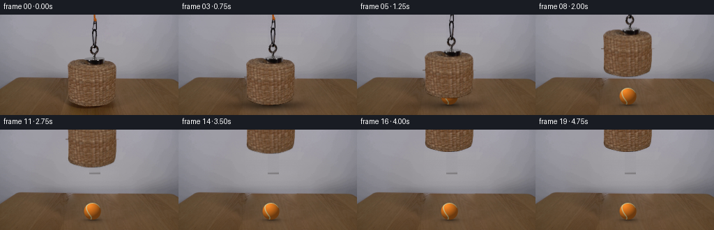
展开代码变化
--- 上一保存版本
+++ 本次保存版本
@@ -25,18 +25,17 @@
coeff=np.polyfit(xx,src[y,xx,ch],2)
wall[y,96:171,ch]=np.polyval(coeff,np.arange(96,171))
# Cord/hook is a much narrower occluder, so preserve surrounding wall.
-for y in range(64):
+for y in range(60):
l=src[y,123:128].mean(axis=0);r=src[y,144:149].mean(axis=0)
for x in range(128,144): wall[y,x]=l+(r-l)*(x-126)/20
# Reuse visible wood grain with a perspective-preserving shift to the camera center.
-xmap=X+.435*(Y+55)
+xmap=180+(X-86)*.70+.15*(Y-93)
xmap=np.minimum(xmap,254)
texture=np.stack([map_coordinates(src[:,:,c],[Y,xmap],order=1,mode='nearest') for c in range(3)],axis=-1)
# Recover the covered table using the texture's gradients and the real surroundings.
mask=np.zeros((H,W),bool)
-for y in range(91,H):
- if y<119: a,b=95,170
- else:a,b=90,177
+for y in range(92,H):
+ a,b=86,182
mask[y,a:b]=True
coords=np.argwhere(mask);idx=np.full((H,W),-1,int)
idx[mask]=np.arange(len(coords))
@@ -53,6 +52,11 @@
A[i,i]=degree
sol=spsolve(A.tocsr(),b)
base=wall.copy();base[mask]=sol
+# Horizon is fixed, continuous, and gently slopes across the tabletop.
+for y in [90,91]:
+ for x in range(96,171):
+ t=(x-91)/87
+ base[y,x]=(1-t)*src[y,91]+t*src[y,178]
# Small mottling of the original wall extends into the restored area.
rng=np.random.default_rng(81)
noise=gaussian_filter(rng.normal(0,.65,(H,W)),.45)
@@ -76,6 +80,7 @@
if body[y,x]<.97 and mag[y,x]<.2:
ca=np.clip((chroma[y,x]+3)/48,0,1)
if ca<.075:ca=0
+ if body[y,x]<.04:ca=0
if body[y,x]>.05 or ca>.15:alpha[y,x]=max(alpha[y,x]*.25,ca)
# Black steel chain and orange cord retain their original silhouette.
for y in range(64):
候选 03播放与检查图
候选 04播放与检查图
点击播放 · 原生 RGB 像素
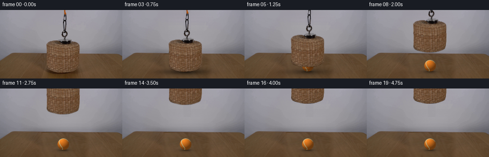
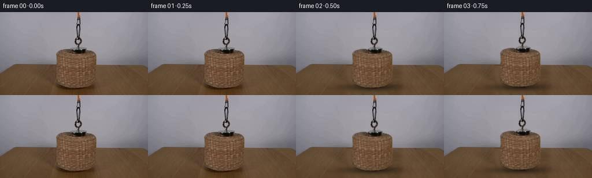
展开代码变化
--- 上一保存版本
+++ 本次保存版本
@@ -29,7 +29,7 @@
l=src[y,123:128].mean(axis=0);r=src[y,144:149].mean(axis=0)
for x in range(128,144): wall[y,x]=l+(r-l)*(x-126)/20
# Reuse visible wood grain with a perspective-preserving shift to the camera center.
-xmap=180+(X-86)*.70+.15*(Y-93)
+xmap=208+(X-132)*.50+.475*(Y-100)
xmap=np.minimum(xmap,254)
texture=np.stack([map_coordinates(src[:,:,c],[Y,xmap],order=1,mode='nearest') for c in range(3)],axis=-1)
# Recover the covered table using the texture's gradients and the real surroundings.
@@ -59,6 +59,12 @@
base[y,x]=(1-t)*src[y,91]+t*src[y,178]
# Small mottling of the original wall extends into the restored area.
rng=np.random.default_rng(81)
+# Grain transport maps the visible right-hand wood into the hidden center;
+# its shear preserves the perspective direction of the grain.
+blend=np.clip((X-78)/12,0,1)*np.clip((188-X)/12,0,1)
+blend*=np.clip((Y-91)/1.5,0,1)
+cleanwood=texture+np.array([-2.5,-2.0,-1.5])
+base=base*(1-blend[:,:,None])+cleanwood*blend[:,:,None]
noise=gaussian_filter(rng.normal(0,.65,(H,W)),.45)
base[:91,96:171]+=noise[:91,96:171,None]
@@ -107,7 +113,7 @@
shade=.46+.56*diff
color=np.array([232,125,33])[None,None,:]*shade[:,:,None]
color+=diff[:,:,None]**9*np.array([12,13,8])
-color+=tex[:,:,None]*2.1
+color+=tex[:,:,None]*4.0
# A closed spherical tennis seam, rotated for two characteristic curved arcs.
t=np.linspace(0,2*np.pi,2600);lat=.55*np.cos(2*t)
curve=np.stack([np.cos(t)*np.cos(lat),np.sin(t)*np.cos(lat),np.sin(lat)],axis=-1)
可观测工具轨迹
实际执行的命令与返回图片。
命令 1exit 0
/bin/bash -lc 'ls -la && cat prompt.txt && cat GENERATION_RULES.md'
命令 2exit 0
/bin/bash -lc "cat artifact_io.py && python - <<'PY'
from PIL import Image
im=Image.open('first_frame.png'); print(im.size);im.resize((1024,576)).save('.tmp/enlarge.png')
PY"命令 3exit 0
/bin/bash -lc "python - <<'PY'
import importlib.util
for x in ['cv2','scipy','numpy','PIL']:
print(x, bool(importlib.util.find_spec(x)))
from PIL import Image, ImageDraw
im=Image.open('first_frame.png').resize((1024,576));d=ImageDraw.Draw(im)
for x in range(80,181,10):
d.line((x*4,0,x*4,576),fill='red',width=1);d.text((x*4,550),str(x),fill='white')
for y in range(50,144,10):
d.line((320,y*4,724,y*4),fill='red',width=1);d.text((725,y*4),str(y),fill='white')
im.save('.tmp/grid.png')
PY"命令 4exit 0
/bin/bash -lc "python - <<'PY'
from PIL import Image
im=Image.open('first_frame.png'); im.crop((90,55,175,137)).resize((680,656)).save('.tmp/crop.png')
PY"命令 5exit 0
/bin/bash -lc "python - <<'PY'
from PIL import Image
im=Image.open('first_frame.png');im.crop((80,85,190,144)).resize((880,472)).save('.tmp/table.png')
PY"命令 6exit 0
/bin/bash -lc "python - <<'PY'
from PIL import Image
import numpy as np
im=np.asarray(Image.open('first_frame.png'))
for y in [80,90,94,100,110,120,130,138,143]:
print(y,[(x,im[y,x].tolist()) for x in [80,90,100,120,135,150,170,180,195,210,240]])
PY"命令 7exit 0
/bin/bash -lc "python - <<'PY'
from PIL import Image
im=Image.open('first_frame.png'); im.resize((1536,864),Image.Resampling.NEAREST).save('.tmp/nearest.png')
PY"命令 8exit 0
/bin/bash -lc "python - <<'PY'
from PIL import Image,ImageDraw
im=Image.open('first_frame.png').resize((1536,864),Image.Resampling.NEAREST); d=ImageDraw.Draw(im)
for x in range(94,173,2):
d.line((x*6,360,x*6,810),fill=(200,90,90),width=1)
d.text((x*6,812),str(x),fill='white')
for y in range(60,134,2):
d.line((550,y*6,1040,y*6),fill=(200,90,90),width=1);d.text((1041,y*6),str(y),fill='white')
im.save('.tmp/fine.png')
PY"命令 9exit 0
/bin/bash -lc "python - <<'PY'
from PIL import Image
import numpy as np
im=np.asarray(Image.open('first_frame.png'))
for y in [63,64,65,66,68,70,72,74,76,80,90,115,120,124,126,128,130,131,132]:
print('\\n',y)
if y<92:
print([(x,int(im[y,x,0])-int(im[y,x,2])) for x in range(94,172)])
else: print([(x,im[y,x].tolist()) for x in range(94,172,2)])
PY"命令 10exit 0
/bin/bash -lc "cat > generate.py <<'PY'
from pathlib import Path
import numpy as np
from PIL import Image, ImageDraw, ImageFilter
import cv2
from scipy.ndimage import gaussian_filter, map_coordinates
from scipy.sparse import lil_matrix
from scipy.sparse.linalg import spsolve
import artifact_io
ROOT=Path(__file__).resolve().parent
W,H=256,144
src=np.asarray(Image.open(ROOT/'first_frame.png').convert('RGB')).astype(float)
Y,X=np.mgrid[0:H,0:W].astype(float)
def polygon(points,scale=4):
m=Image.new('L',(W*scale,H*scale))
ImageDraw.Draw(m).polygon([(round((x+.5)*scale),round((y+.5)*scale)) for x,y in points], fill=255)
return np.asarray(m.resize((W,H),Image.Resampling.LANCZOS)).astype(float)/255
# Clean static wall: reconstruct only the portion concealed by the apparatus.
wall=src.copy()
for y in range(92):
xx=np.r_[np.arange(77,96),np.arange(171,199)]
for ch in range(3):
coeff=np.polyfit(xx,src[y,xx,ch],2)
wall[y,96:171,ch]=np.polyval(coeff,np.arange(96,171))
# Cord/hook is a much narrower occluder, so preserve surrounding wall.
for y in range(64):
l=src[y,123:128].mean(axis=0);r=src[y,144:149].mean(axis=0)
for x in range(128,144): wall[y,x]=l+(r-l)*(x-126)/20
# Reuse visible wood grain with a perspective-preserving shift to the camera center.
xmap=X+.435*(Y+55)
xmap=np.minimum(xmap,254)
texture=np.stack([map_coordinates(src[:,:,c],[Y,xmap],order=1,mode='nearest') for c in range(3)],axis=-1)
# Recover the covered table using the texture's gradients and the real surroundings.
mask=np.zeros((H,W),bool)
for y in range(91,H):
if y<119: a,b=95,170
else:a,b=90,177
mask[y,a:b]=True
coords=np.argwhere(mask);idx=np.full((H,W),-1,int)
idx[mask]=np.arange(len(coords))
A=lil_matrix((len(coords),len(coords)))
b=np.zeros((len(coords),3))
for i,(y,x) in enumerate(coords):
degree=0
for yy,xx in [(y-1,x),(y+1,x),(y,x-1),(y,x+1)]:
if yy<0 or yy>=H or xx<0 or xx>=W:continue
degree+=1
b[i]+=texture[y,x]-texture[yy,xx]
if mask[yy,xx]: A[i,idx[yy,xx]]=-1
else: b[i]+=wall[yy,xx]
A[i,i]=degree
sol=spsolve(A.tocsr(),b)
base=wall.copy();base[mask]=sol
# Small mottling of the original wall extends into the restored area.
rng=np.random.default_rng(81)
noise=gaussian_filter(rng.normal(0,.65,(H,W)),.45)
base[:91,96:171]+=noise[:91,96:171,None]
# Original woven surface and steel fittings, segmented at subpixel precision.
outline=[(97,72),(98.2,69.2),(102,66.4),(110.8,64.1),(118.4,63.8),
(124,65),(129,66.1),(145,65.2),(151,65.9),(158,67.9),(163,70.1),
(165.7,73),(166.1,77),(166.2,94),(166,108),(164.5,118.9),
(162.5,123.4),(158.3,125.8),(151.1,128.6),(143,130.4),
(135.6,131.1),(127.5,131.3),(119.8,130.4),(111.2,128.6),
(104.9,126.7),(100.4,124.7),(98.1,122),(97.2,119),
(97.7,109),(97.7,99),(97.6,89),(97.4,81),(96.8,76)]
body=polygon(outline)
mag=polygon([(124.3,63.3),(128,61.9),(134,60.9),(141.9,61),(147.4,61.8),(149.1,63.2),(149.1,67.7),(147.9,70),(143.4,71.5),(132.2,71.6),(127.5,70.5),(125.1,68.2)])
alpha=np.maximum(body,mag)
# Improve wicker edge coverage from its warm chromatic contrast with gray wall.
chroma=src[:,:,0]-src[:,:,2]
for y in range(64,92):
for x in range(94,171):
if body[y,x]<.97 and mag[y,x]<.2:
ca=np.clip((chroma[y,x]+3)/48,0,1)
if ca<.075:ca=0
if body[y,x]>.05 or ca>.15:alpha[y,x]=max(alpha[y,x]*.25,ca)
# Black steel chain and orange cord retain their original silhouette.
for y in range(64):
for x in range(128,145):
drop=(base[y,x,2]-src[y,x,2])
a=np.clip(drop/93,0,1)
if a<.07:a=0
alpha[y,x]=max(alpha[y,x],a)
# Unmix background at antialiased edges, so moving the sprite leaves no gray fringe.
fg=np.clip((src-base*(1-alpha[:,:,None]))/np.maximum(alpha[:,:,None],.03),0,255)
fg[alpha>.995]=src[alpha>.995]
premult=fg*alpha[:,:,None]
# Tennis ball: shaded fabric sphere with a curved, inset pale seam.
S=4; yy,xx=np.mgrid[0:H*S,0:W*S].astype(float);xx=(xx+.5)/S-.5;yy=(yy+.5)/S-.5
cx,cy,rad=132.1,116.65,12.1
u=(xx-cx)/rad;v=(yy-cy)/rad
q=u*u+v*v
z=np.sqrt(np.maximum(0,1-q));inside=q<=1
norm=np.stack([u,-v,z],axis=-1)
light=np.array([-.42,.69,.58]);light/=np.linalg.norm(light)
diff=np.maximum(0,norm@light)
tex=rng.normal(0,1,inside.shape);tex=gaussian_filter(tex,.45)
shade=.46+.56*diff
color=np.array([232,125,33])[None,None,:]*shade[:,:,None]
color+=diff[:,:,None]**9*np.array([12,13,8])
color+=tex[:,:,None]*2.1
# A closed spherical tennis seam, rotated for two characteristic curved arcs.
t=np.linspace(0,2*np.pi,2600);lat=.55*np.cos(2*t)
curve=np.stack([np.cos(t)*np.cos(lat),np.sin(t)*np.cos(lat),np.sin(lat)],axis=-1)
ay=.63;az=.35;ax=.7
Ry=np.array([[np.cos(ay),0,np.sin(ay)],[0,1,0],[-np.sin(ay),0,np.cos(ay)]])
Rx=np.array([[1,0,0],[0,np.cos(ax),-np.sin(ax)],[0,np.sin(ax),np.cos(ax)]])
Rz=np.array([[np.cos(az),-np.sin(az),0],[np.sin(az),np.cos(az),0],[0,0,1]])
curve=curve@(Rz@Rx@Ry).T
seam=np.zeros((H*S,W*S),np.uint8)
valid=curve[:,2]>=0
for i in range(len(curve)-1):
if valid[i] and valid[i+1]:
a=(int(round((cx+rad*curve[i,0]+.5)*S)),int(round((cy-rad*curve[i,1]+.5)*S)))
b0=(int(round((cx+rad*curve[i+1,0]+.5)*S)),int(round((cy-rad*curve[i+1,1]+.5)*S)))
cv2.line(seam,a,b0,255,3,lineType=cv2.LINE_AA)
s=gaussian_filter(seam.astype(float)/255,.48)*inside
seamcolor=np.array([222,209,152])[None,None,:]*(.54+.43*diff[:,:,None])
color=color*(1-s[:,:,None])+seamcolor*s[:,:,None]
ballalpha=inside.astype(float)
ballrgb=cv2.resize(color*ballalpha[:,:,None],(W,H),interpolation=cv2.INTER_AREA)
balla=cv2.resize(ballalpha,(W,H),interpolation=cv2.INTER_AREA)
frames=[]
# Smooth hand-operated rise, without a visible hand entering the demonstration.
for n in range(20):
time=n/4
if n<2:
frames.append(src.astype(np.uint8));continue
progress=np.clip((time-.25)/3.8,0,1)
# Quintic velocity ramp: starts and finishes at rest.
offset=100*(progress**3*(10+progress*(-15+6*progress)))
im=base.copy()
# Table shadow spreads and fades as the basket moves away from the ball.
lift=offset
shadow=np.exp(-((X-(130+lift*.025))/(34+lift*.08))**2/2-((Y-129.5)/(4.5+lift*.04))**2/2)
shadow*=.54*np.exp(-lift/21)
shadow*=np.clip((Y-93)/10,0,1)
im*=1-shadow[:,:,None]
# Stationary ball contact and soft penumbra.
bs=.22*np.exp(-((X-133.6)/14)**2-((Y-129.7)/3.05)**2)
bs+=.30*np.exp(-((X-132.4)/8.7)**2-((Y-129.0)/1.05)**2)
im*=1-bs[:,:,None]
illumination=.81+.19*(1-np.exp(-offset/16))
im=im*(1-balla[:,:,None])+ballrgb*illumination
# Retain the real photographed weave throughout its vertical translation.
M=np.array([[1,0,0],[0,1,-offset]],np.float32)
a=cv2.warpAffine(alpha,M,(W,H),flags=cv2.INTER_LINEAR,borderMode=cv2.BORDER_CONSTANT)
p=cv2.warpAffine(premult,M,(W,H),flags=cv2.INTER_LINEAR,borderMode=cv2.BORDER_CONSTANT)
im=im*(1-a[:,:,None])+p
frames.append(np.clip(np.round(im),0,255).astype(np.uint8))
frames=np.stack(frames)
artifact_io.save(frames,ROOT)
Image.fromarray(np.clip(base,0,255).astype(np.uint8)).save(ROOT/'.tmp/background.png')
Image.fromarray((alpha*255).astype(np.uint8)).save(ROOT/'.tmp/alpha.png')
PY
python generate.py"命令 11exit 0
/bin/bash -lc "python - <<'PY'
p='generate.py'
s=open(p).read().replace('for y in range(64):\\n l=src','for y in range(60):\\n l=src')
s=s.replace('xmap=X+.435*(Y+55)','xmap=180+(X-86)*.70+.15*(Y-93)')
s=s.replace('for y in range(91,H):\\n if y<119: a,b=95,170\\n else:a,b=90,177','for y in range(92,H):\\n a,b=86,182')
s=s.replace('sol=spsolve(A.tocsr(),b)\\nbase=wall.copy();base[mask]=sol','sol=spsolve(A.tocsr(),b)\\nbase=wall.copy();base[mask]=sol\\n# Horizon is fixed, continuous, and gently slopes across the tabletop.\\nfor y in [90,91]:\\n for x in range(96,171):\\n t=(x-91)/87\\n base[y,x]=(1-t)*src[y,91]+t*src[y,178]')
s=s.replace('if ca<.075:ca=0','if ca<.075:ca=0\\n if body[y,x]<.04:ca=0')
open(p,'w').write(s)
PY
python generate.py"命令 12exit 0
/bin/bash -lc "python - <<'PY'
from PIL import Image
Image.open('frames/19.png').resize((1024,576)).save('.tmp/end.png')
Image.open('frames/03.png').resize((1024,576)).save('.tmp/start.png')
PY"命令 13exit 0
/bin/bash -lc "cp generate.py .tmp/v1.py
python - <<'PY'
p='generate.py';s=open(p).read();s=s.replace('xmap=180+(X-86)*.70+.15*(Y-93)','xmap=208+(X-132)*.50+.475*(Y-100)')
s=s.replace('noise=gaussian_filter(rng.normal(0,.65,(H,W)),.45)','''# Grain transport maps the visible right-hand wood into the hidden center;
# its shear preserves the perspective direction of the grain.
blend=np.clip((X-78)/12,0,1)*np.clip((188-X)/12,0,1)
blend*=np.clip((Y-91)/1.5,0,1)
cleanwood=texture+np.array([-2.5,-2.0,-1.5])
base=base*(1-blend[:,:,None])+cleanwood*blend[:,:,None]
noise=gaussian_filter(rng.normal(0,.65,(H,W)),.45)''')
s=s.replace('tex=rng.normal(0,1,inside.shape);tex=gaussian_filter(tex,.45)','tex=rng.normal(0,1,inside.shape);tex=gaussian_filter(tex,.45)')
s=s.replace('color+=tex[:,:,None]*2.1','color+=tex[:,:,None]*4.0')
open(p,'w').write(s)
PY
python generate.py
python - <<'PY'
from PIL import Image
Image.open('frames/19.png').resize((1024,576)).save('.tmp/end2.png')
PY"命令 14exit 0
/bin/bash -lc "which ffmpeg || true; python - <<'PY'
from PIL import Image
import numpy as np
p=np.load('pixels.npz')['pixels'];print('Packed video:',p.shape)
assert np.array_equal(np.asarray(Image.open('first_frame.png').convert('RGB')),np.asarray(Image.open('frames/00.png')))
print('First frame identical; 20 frames generated.')
PY"视觉工具实际返回图片 1

视觉工具实际返回图片 2
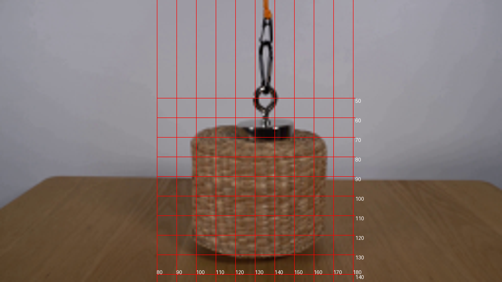
视觉工具实际返回图片 3
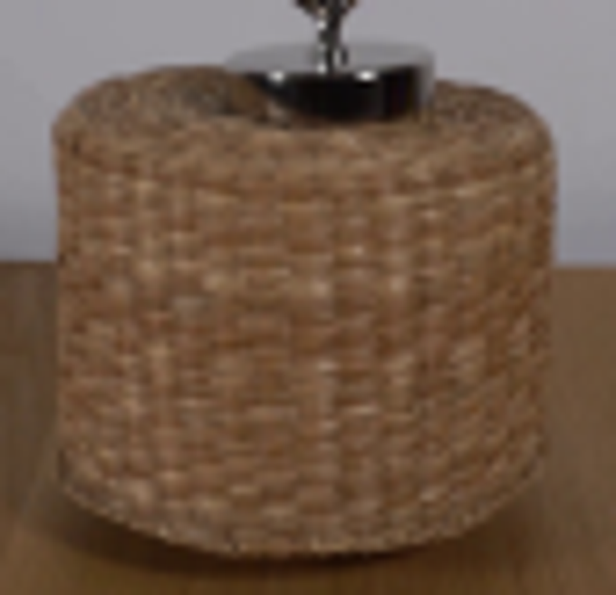
视觉工具实际返回图片 4
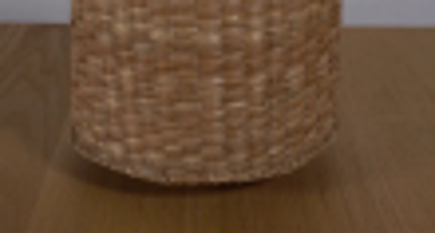
视觉工具实际返回图片 5

视觉工具实际返回图片 6
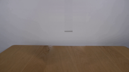
视觉工具实际返回图片 7
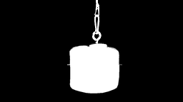
视觉工具实际返回图片 8

视觉工具实际返回图片 9
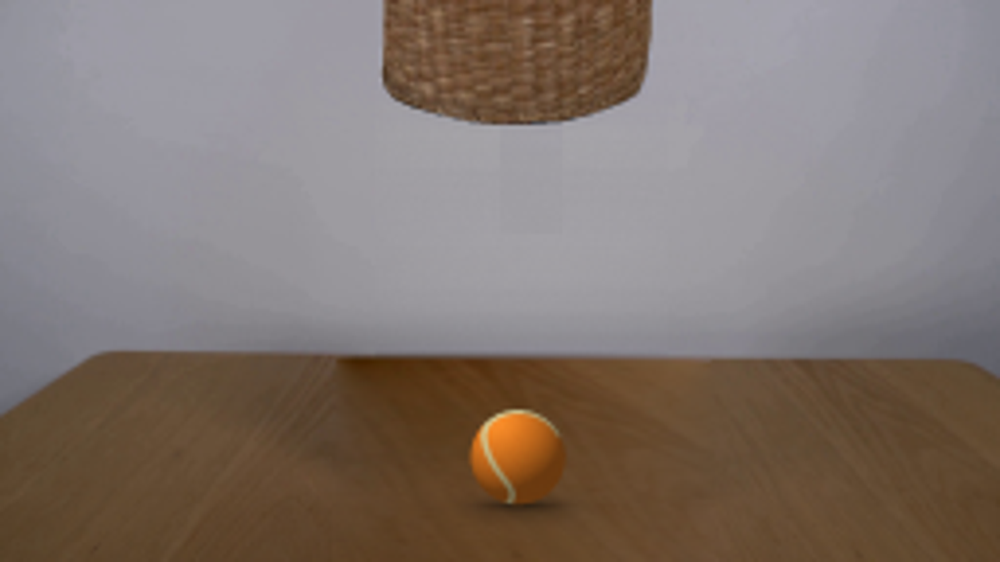
视觉工具实际返回图片 10
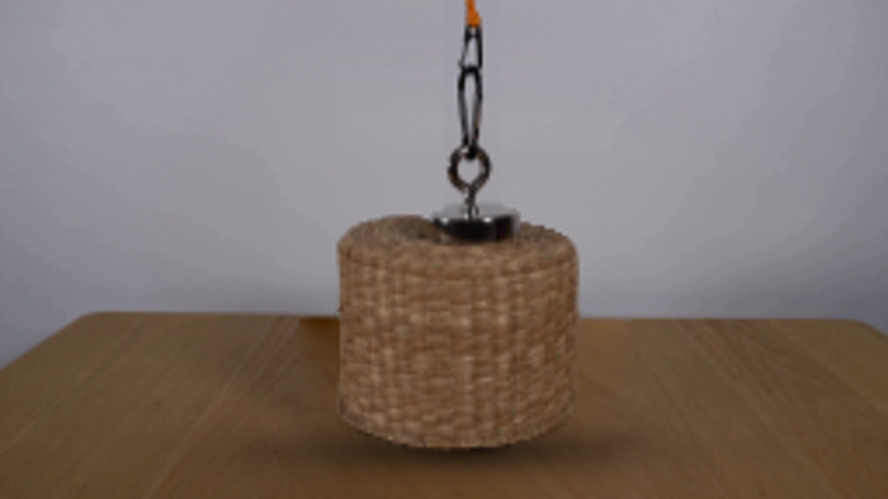
视觉工具实际返回图片 11
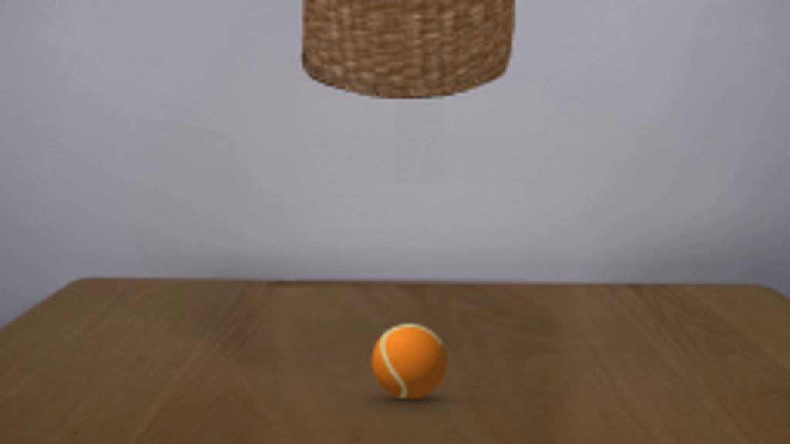
保存候选 4 份；完成命令 14 次；可验证图片返回 11 张。原始 API 响应与完整日志保留在本地。